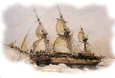
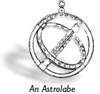
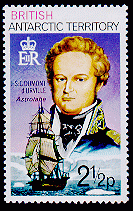

Background (The Ship): This French Antarctic Territories stamp is dedicated to J.S.C. Dumont D'Urville, who commanded the expedition in 1825 in search of La Perouse remnants. The corvette L'Astrolabe was launched at Toulon in 1811 as Ecurie, a horse transport ship of 380 tons. She is one of twelve ships of the same type, length 31.57, beam 18.48, draught 4.25m, sail area 994 sqm. Armed with fourteen 6pdr guns. She could transport between 40 and 50 horses. During 1813 she was transformed for the transportation of men and ammunition. The new corvette was named La Coquille on 9 July 1814. Because of her qualities, she was again transformed for survey voyages. On August 1822, under command of Duperrey, she left Toulon for her first round the world voyage. On 24 March 1825 she was back in Marseille.

Scientific results were very important at the time after the Revolution and Napolenic problems, and France wanted to know about the La Perouse expedition. The first of August 1785, the Astrolabe and the Boussole de la Perouse depared for a voyage around the world, from which they would never return.
Renamed Astrolabe (a navigational instrument, but also the name of Perouses's ship which disappeared somewhere in the Pacific in 1788) she left Toulon on 25 April 1826, under command of Dumont D'Urville. He finally found the place where the former Astrolabe had sunk near the coast of Vanikoro, New Hebrides - a 'halve globe' away from the spot where the last message was send from.
Remarkable though is the fact that Jules Verne in one of his books, 20.000 miles under the sea, has named the island Vanikoro as one of the possible places where Perouse has wrecked...
A second scientific voyage took place from 1826 to 1829, during which ASTROLABE rode out terrifying storms, ran aground six times and avoided sinking only by a miracle. She nevertheless reached Vanikoro where a monument was created to the memory of the lost sailors, she then brought home the remains of ASTROLABE and LA PEROUSE. Eight years later, Dumont D'Urville undertook a third circumnavigation, still in ASTROLABE but now in company with another, identical corvette, the ZELEE. After a number of daring attempts to sail through icebergs and the ice, it was in 1840 that he discovered the land to which he gave the name of his wife: Adélie.
The Atlas: The plates in this collection represent some of the specimens collected during the scientific expeditions of 1826 to 1829. The entire set of volumes are part of the MBL/WHOI library collection and contain illustrations of both terrestrial and aquatic organisms as well as maps, charts, and other scenes from the voyages. All of these were recreated by scientific illustrators who accompanied the ships and artfully recorded the images.
The nine volumes are housed as part of the rare books collection at the MBL/WHOI Library. The text and plates are being digitized as part of a special collection and to make this otherwise inaccessbile text and imagery available to the growing online community.
This current effort illustrates some of the plates. These were digitally captured using flatbed scanners. Scanned images have been scaled and processed for the web.
|